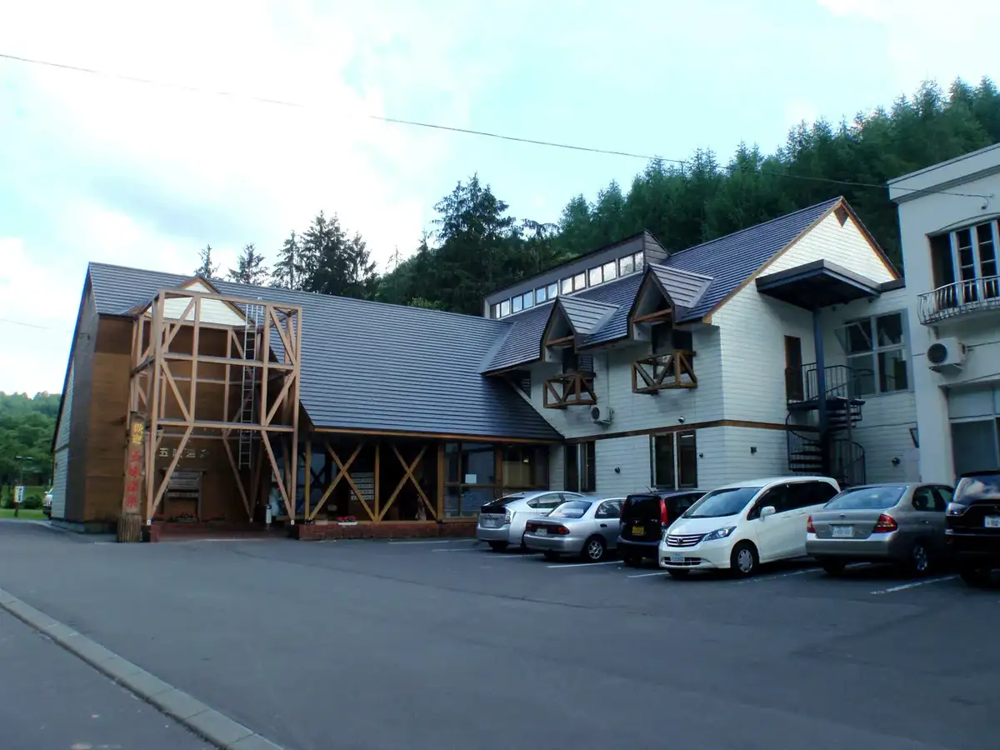
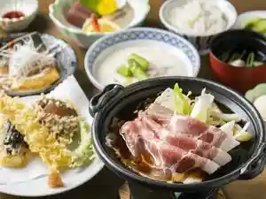
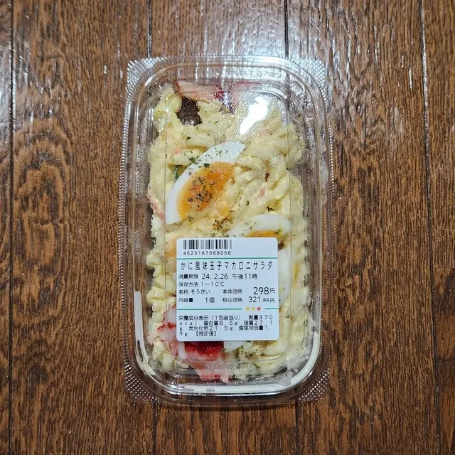
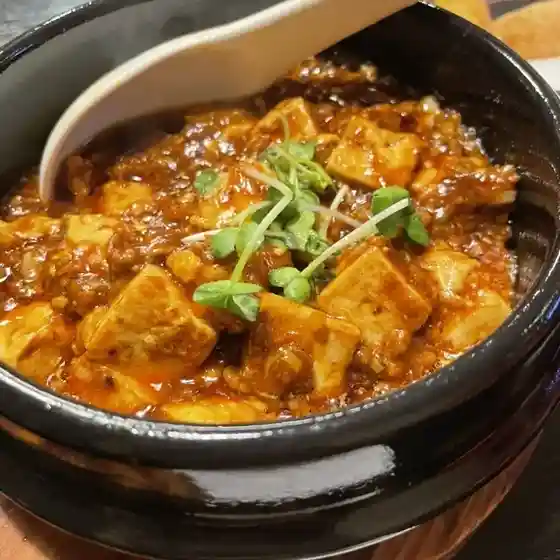
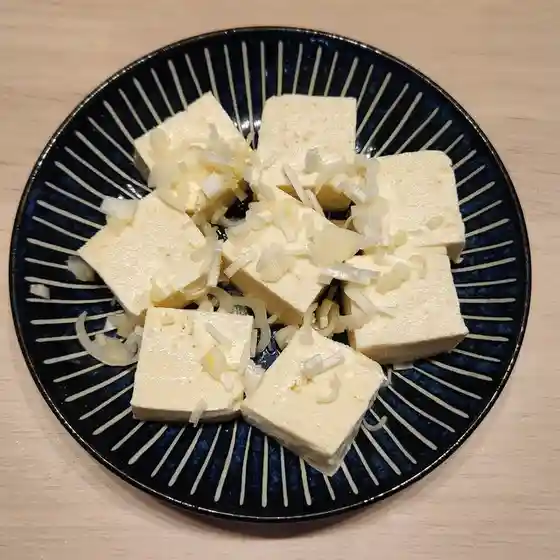
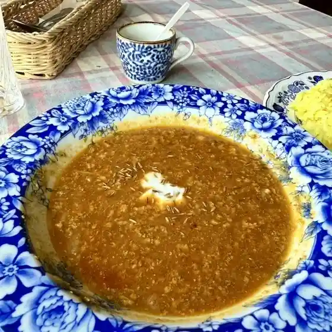
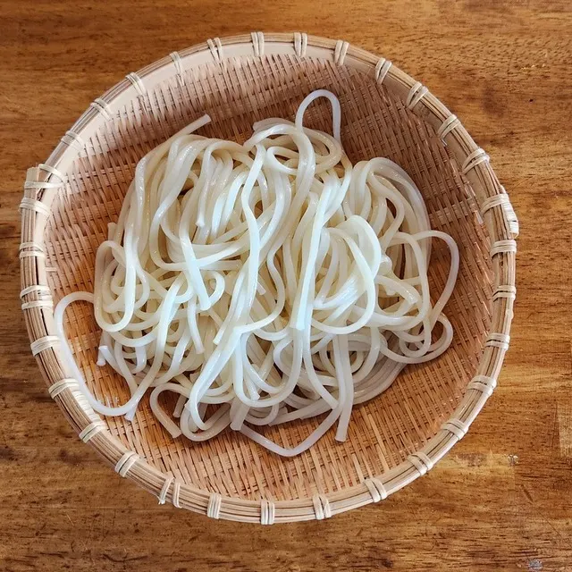
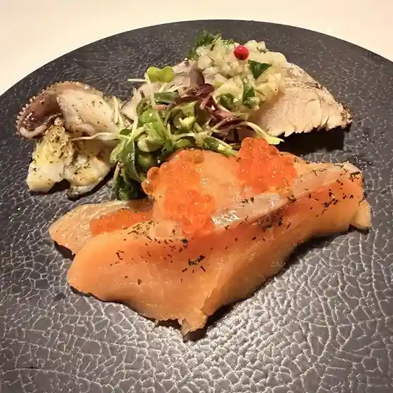
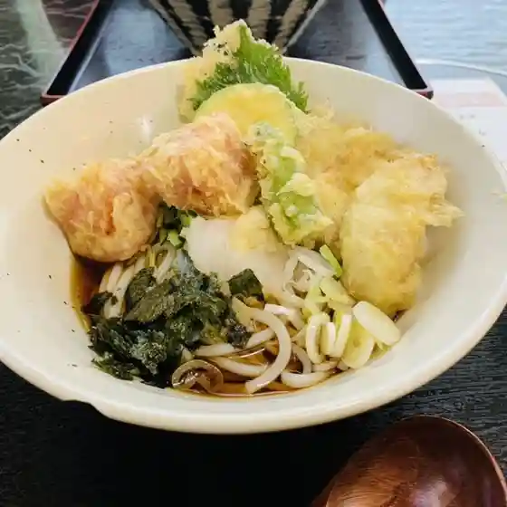

Shimokawa
Shimokawa · Hokkaido
Shimokawa
Highlighted on the Hokkaido map.

Stay
五味温泉

Gomi Onsen
Dining
Ｑマート 下川店

Q Maato Shimokawa Mise
ユウヅル亭

Yuuzuru Tei
かとう食品

Katou Shokuhin
モレーナ

Moreena
たばた製麺

Tabata Seimen
共立日和

Kyouritsu Hiyori
みなみ家

Minami Ie
居酒屋 味源

Izakaya Aji Gen
Esther's
Esther'S
肉のキクチ
Niku No Kikuchi
結いの森
Ketsu Ino Mori
OTOCOFFEE
Otocoffee
焼肉ハンター
Yakiniku Hantaa
はるころカフェ
Harukoro Kafe
コーヒーのアポロ
Koohii No Aporo
串辰
Kushi Tatsu
Ｓｈｏｐ ｃａｆｅ 美花夢
S H O P C A F E Mika Yume
たい焼き球ちゃん
Tai Yaki Tama Chan
ケータのケータリング
Keeta No Keetaringu
中川製麺
Nakagawa Seimen
お食事処 りんどう
O Shokuji Tokoro Rindou
ビアスタンド エール
Biasutando Eeru
萬坊
Manbou
ジョジョニ
Jojoni